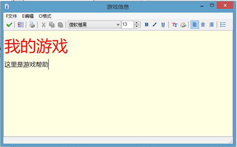

要创建简单的游戏信息，请双击屏幕左边的资源树中的游戏信息，会打开一个小型内置编辑器，在那里你可以编辑游戏信息，使用不同的字体、不同的颜色和样式，还可以设置背景颜色。

在文件菜单的设置选项中你还可以进行一些设定，默认情况下帮助会显示在游戏窗口中，但游戏会暂停，如果你不需要暂停，可以设定游戏在信息显示时继续运行。在这里你还可以将帮助文件显示在单独的窗口，更改帮助窗口的标题，设定游戏信息窗口的位置（-1代表屏幕中心）与大小，设定是否可以调整窗口边界，以及强制信息窗口保持在顶部。
我建议您最好让自己的帮助文档精简些，当然，因为是您创建的游戏，要加上作者的名字。gamemaker自带的每一个游戏范例都有一个帮助文档，其中详细介绍了游戏的设计过程。你应该在帮助文档的底部提醒玩家按<ESC>键退出，不否则玩家可能会不知所措。
如果你想让你的帮助更加花哨一些，请使用像word这类的软件，然后将你想要的部分从word里复制到帮助编辑器里。当你做些比较复杂的游戏的时候，可能不会使用这种机制，而是自己设计一些房间来显示帮助信息，来提高美观度。